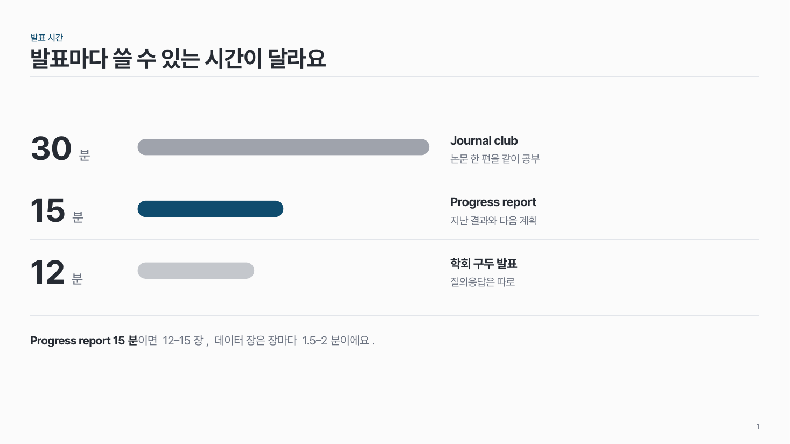
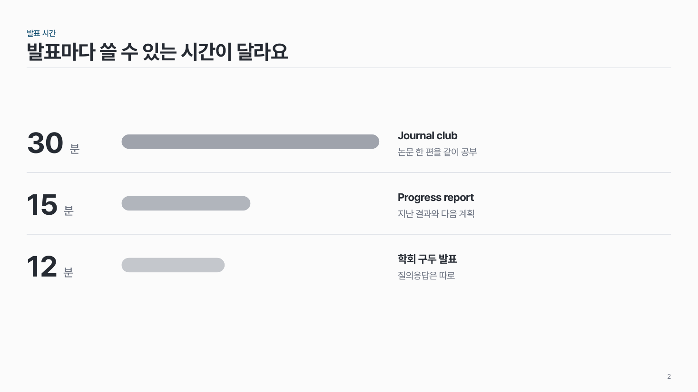

알약 막대 data-04
같은 시작점에서 값에 비례한 알약 모양 가로 막대. 값은 왼쪽에 크게, 핵심 막대 하나만 주조색.

언제 쓰나
값이 2–8개뿐이고 크기 비교가 메시지일 때요. 기본 막대 그래프보다 가볍고 읽기 쉬워요.
구성
- 줄마다 왼쪽에 값(크게) + 단위.
- 같은 시작점에서 값에 비례한 알약 막대.
- 막대 오른쪽에 이름과 짧은 설명.
- 핵심 막대 하나만 주조색, 나머지는 같은 색의 옅은 명도.
지킬 것
- 막대 2–8개.
- 막대 길이는 값에 정확히 비례.
- 순서는 이야기 순서대로 (꼭 큰 값부터일 필요는 없어요).
하지 말 것
- 막대마다 다른 색을 쓰지 않아요.
- 축과 눈금을 붙이지 않아요. 값이 왼쪽에 적혀 있어요.
더 볼 게시물 Instagram @peedori_
시안 비교
같은 내용을 옵션만 바꿔 그렸어요. 그림을 누르면 크게 보여요.
A막대 3개 · 핵심 막대 · 아래 결론 줄
슬라이드 제목: 발표마다 쓸 수 있는 시간이 달라요

B같은 내용 → 강조 없음
슬라이드 제목: 발표마다 쓸 수 있는 시간이 달라요